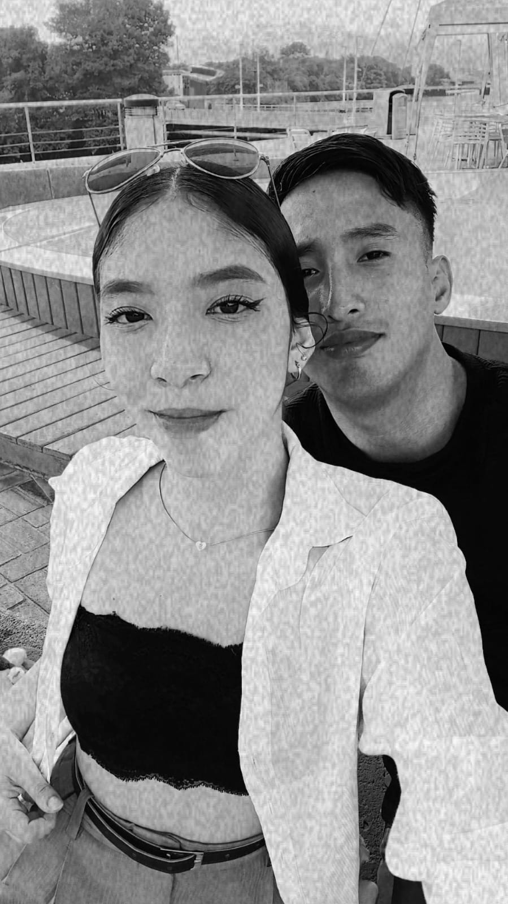
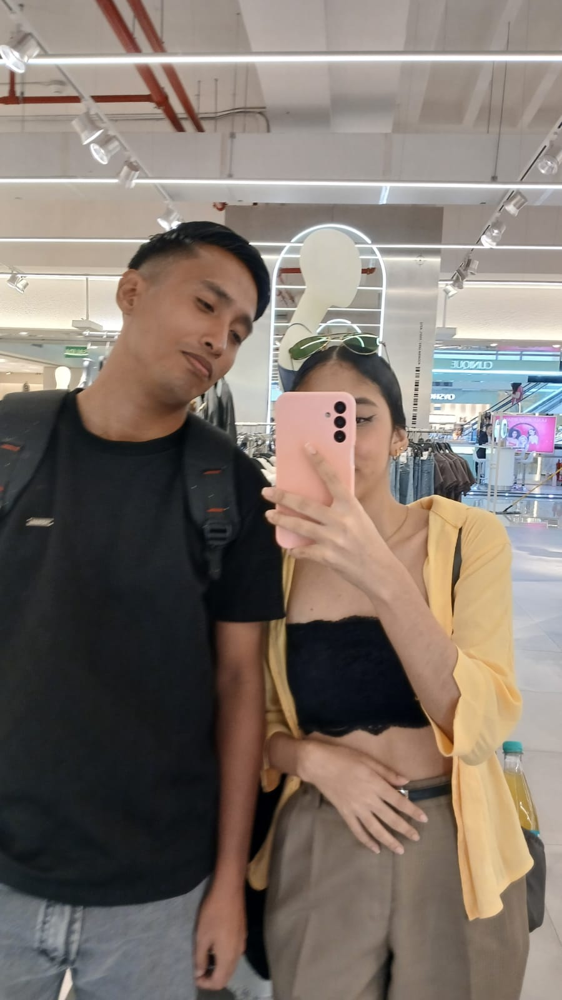
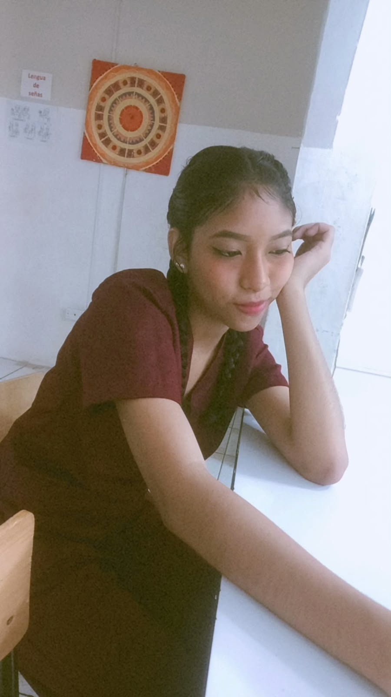
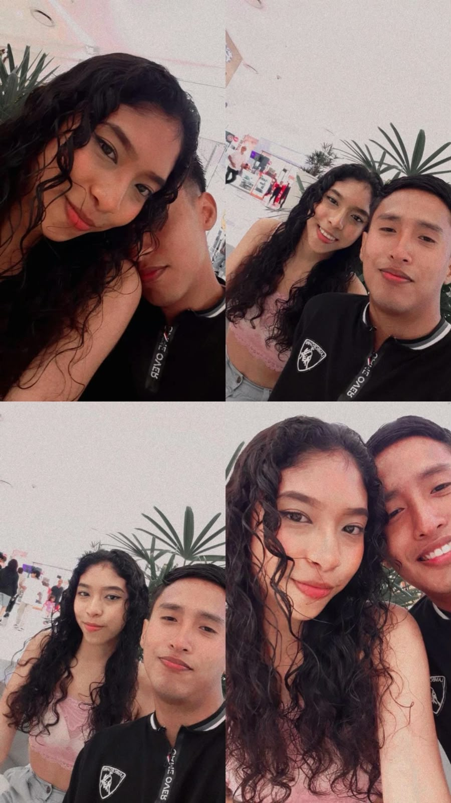
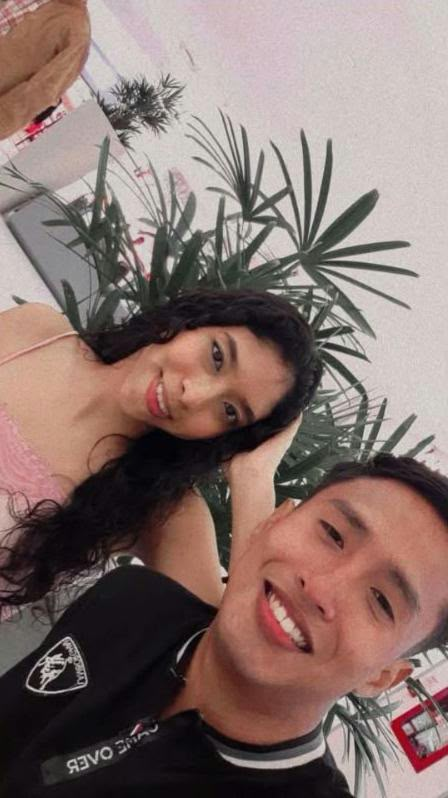

UN ÁLBUM ESPECIAL
Nuestros
recuerdos
Pequeños momentos,
grandes historias...
🌷 ♡ 🌷
Hecho con cariño
Un pequeño álbum hecho con cariño
Pequeños momentos, grandes historias.
UN ÁLBUM ESPECIAL
Pequeños momentos,
grandes historias...



XOXO ✿



A veces, los momentos más sencillos son los que más recordamos.
✿


LOVE THESE DAYS


Qué bonito es tener recuerdos así y saber que todavía nos quedan muchos por vivir.
✿Gracias por tu amistad, por las sonrisas y por cada momento compartido.
Que este nuevo año esté lleno de cosas bonitas, alegrías y muchos motivos para sonreír.
Que vengan muchos recuerdos más...
Con cariño ♡También puedes pasar las hojas arrastrando una esquina del cuaderno.